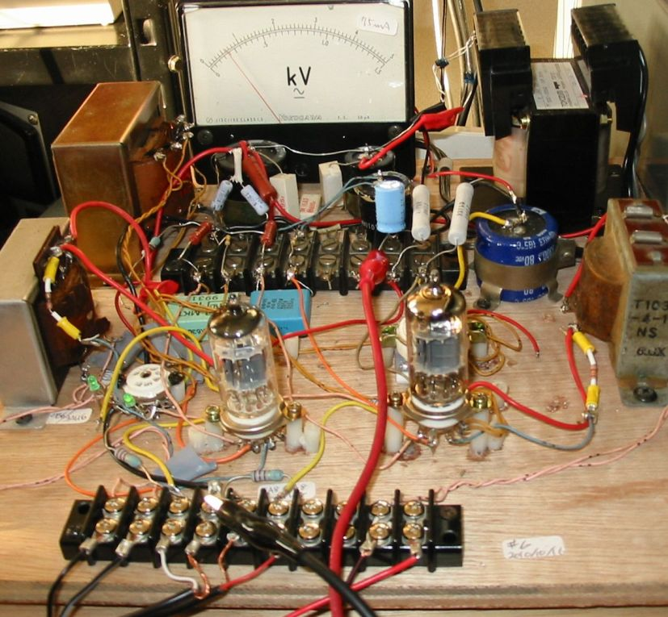
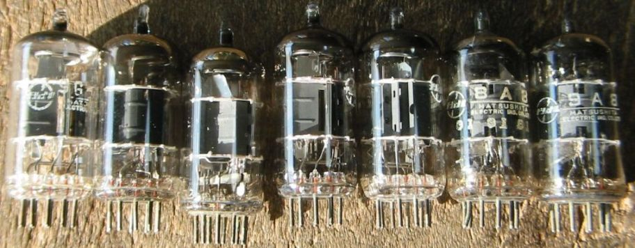
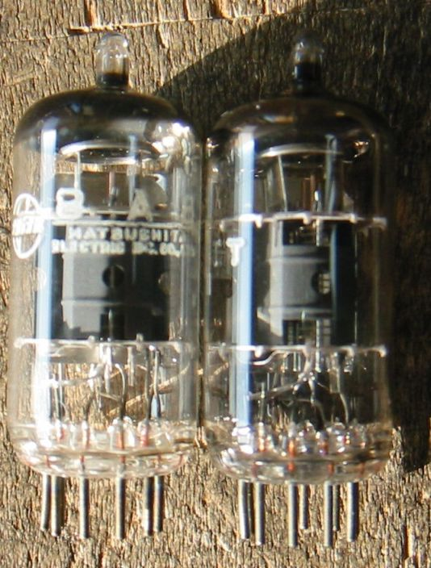
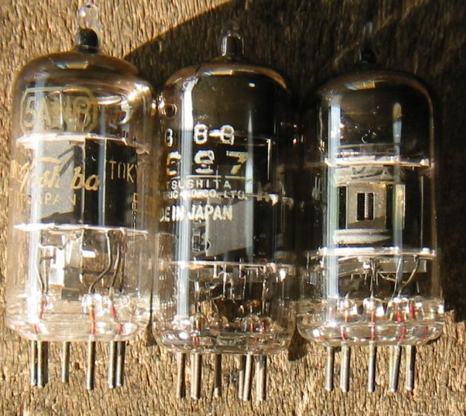

8A8や9GH8Aなどをオーディオアンプの出力管として使ってみます。
前回、6JZ8や6LU8などのコンパクトロンをテストしたアンプを8A8や9GH8Aなど、使い道のない管を試せるように改造
しました。小出力の出力管として十分使えるという結果が得られたと思います。
下の写真では9GH8A使用したステレオアンプで出力段は3結です。電流計はフルスケール75mAなので、出力段の
カソード電流は約10mAということになります。したがってバイアス電圧は4V、ドライブはPeakt-Peakで４Vしかいりません。

TV用小型3極5極複合管はオーディオアンプの出力管として使えるか？
次の表は代表的な小型出力管とTV用小型3極5極複合管の5極部の規格です。
| 定格 | プレート電圧/電流 | スクリーングリッド電圧/電流 | プレート許容損失 | グリッド電圧 | Gm | RL | 出力 |
| 6ZP1 | 180V/15mA | 180V/2.5mA | 3.5W | -10V | 2300μﾓｰ | 12KΩ | 1.0W |
| 6AK6 | 180V/15mA | 180V/2.5mA | 2.75W | -9V | 1750μﾓｰ | 10KΩ | 1.1W |
| 8A8 | 170V/10mA | 170V/2.8mA | 1.7W | 不明(Rk390Ω) | 6200μﾓｰ | 不明（7KΩで使用） | 不明 |
| 9GH8A | 125V/12mA | 125V/4mA | 2.5W | 不明(Rk390Ω) | 7500μﾓｰ | 不明（7KΩで使用） | 不明 |
8A8で試してみる。
まず6ZP1より少し小さい出力を目標として、5極管のままでは感度が高すぎ、また内部抵抗も高すぎるので
3極管接続とする。μ2は47なので、rpはおよそ7.6KΩとなり、何とか出力管らしくなる。
あり合わせの7KΩのOPTで良しとしよう。
カソード抵抗を390Ωとして動作させると、Ik=7mAとなり、プレート電圧220Vに対し、プレート損失約1.5Wとなる。
音を出してみると、びっくりするくらい大きな音で、音質も悪くない。
9GH8Aも試してみる。
次に8A8とピン接続が同じで、使い道がない9GH8Aが沢山あったので、試してみた。
9GH8Aはプレート許容損失が2.5Wもあるので、8A8よりいいかもしれない。
Ik=10mAとなり、プレート電圧220Vに対し、プレート損失約2.2Wとなる。
μ2は特性曲線から読み取ると42なので、rpはおよそ5.6KΩとなり、8A8より低くなる。
これも全く問題なく動作する。
ステレオアンプにする。
9GH8Aでステレオアンプとして、しばらく使ってみることにします。
2011/01/29
9GH8A/8A8/9A8

8A8と9GH8Aの比較、見たところほとんど同じです。

その他の代表的な3極5極複合管
5AN8、5CG7、5U8、まだ試していません。
5U8/6U8は8A8とピン接続が同じです。

2011/01/29
back to top
back to home page